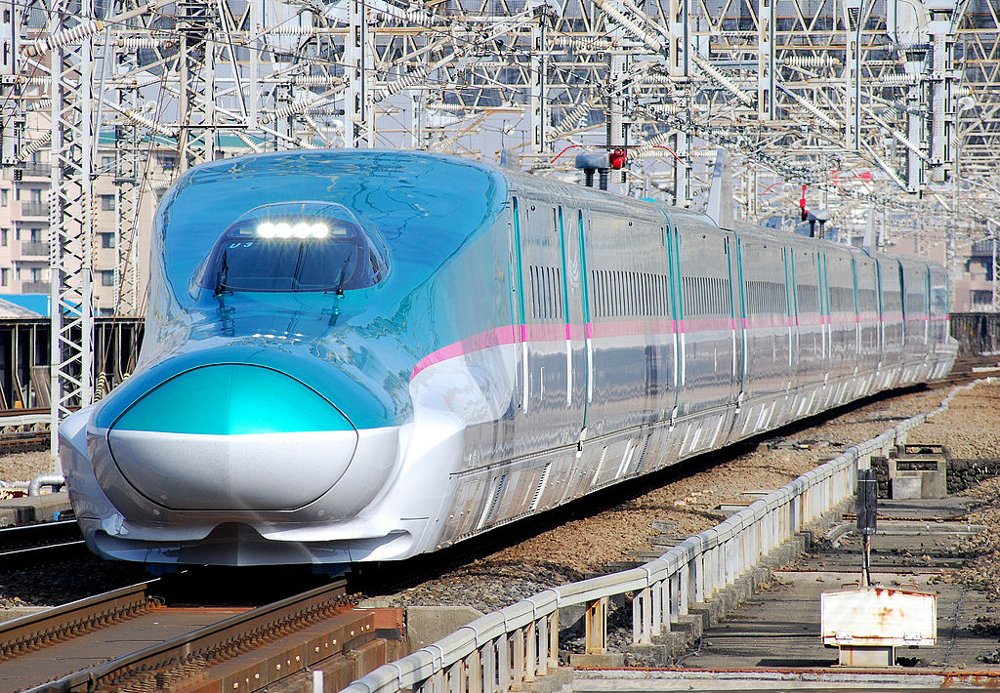
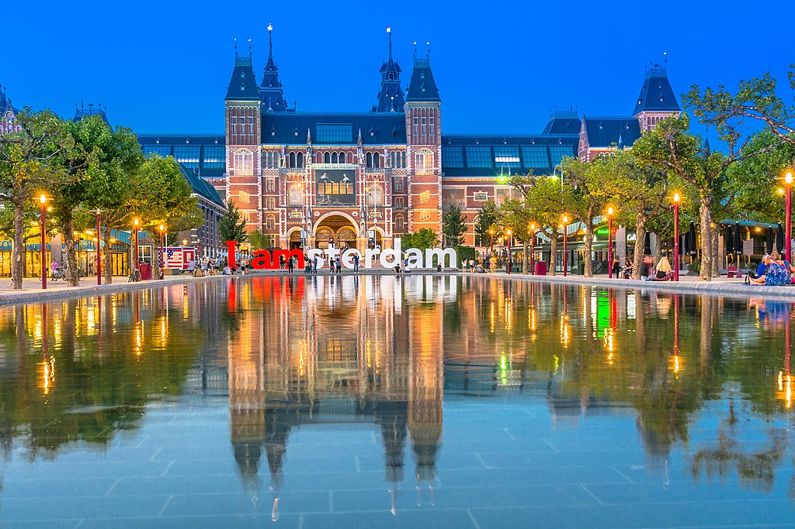
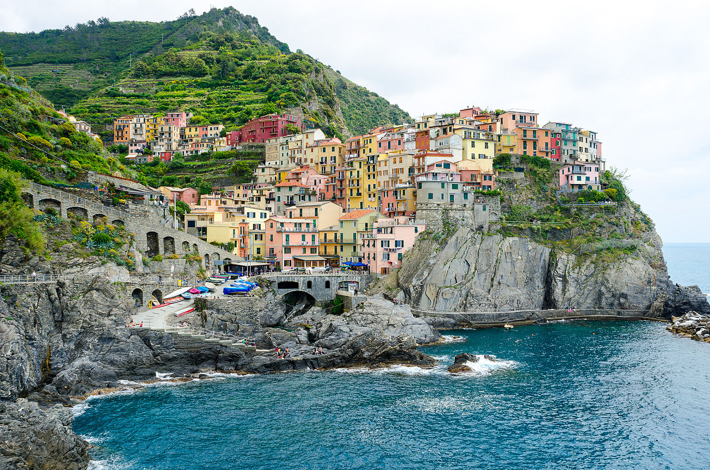

I want to go to Germany because I studied the languange in high school and I never had the chance to speak the language. I really enjoyed learning about their culture and I enjoy drinking German style beers. Some of the cities I would like to visit include:
- Munich
- Frankfurt
- Cologne
- Hamburg
- Berlin
I would also love to visit the United Kingdom in the spring time. I would travel to London, and then to Manchester, and then to the Isle of Man.
While I'm in the country I would also go and visit Scotland and visit the cities of Edinburgh and Glasgow. I would checkout the Cairngorms National Park that is just North of both of these cities.
Then on my way back to London I would go west and checkout some smaller cities in Wales. Seeing Cardiff Castle has always been something that I wanted to do since playing the peice by Mark Williams in middle school.
Japan has always interested me and since it is an island nation it has been isolated throughout the centuries.
I woud love to travel around Japan by rail because they have a sophisticated high speed rail system that goes across majority of the country. They also have a railpass that is a joint venture between six companies that allows for you to tavel around the country by train!
The Netherlands is another country in Europe that I would love to visit beacuase they have a lot of interesting public infrastucure that has been built in the past several decades. I would love to sightsee all the places throughout Amsterdam
One of the most interesting public infrastucure projects is called the Delta Works, which is a series of dykes, levees, and dams that were constructed after the 1953 disater. This was a major flood disaster in the North Sea causing damage throughout the Netherlands, Belgium, Scotland, and England.
I really want to visit Italy because of their amazing food culture. I would love to visit Rome, Naples, and the Italian Riviera, which countains a few UNESCO World Heritage sites.
Italy also has a lot World Heritage sites that have stood the test of time.
Example 1: Some JS Template Literals
let string = "Hello World";
console.log(`This is what is contained within the string variable:
${string}`);
//Expected output: "This is what is contained within
the string variable: Hello World"
Example 2: Some Loop Examples
let array = ["Hello","My","Name","is","Matthew"]
for(var i = 0; i < array.length; i++){
console.log(array[i]);
}
//Expected output, each one on a new line: Hello, My, Name, is,
Matthew
var j = 10;
while(j > 0){
console.log(j);
j--;
}
//Expected output, each one on a new line: 10,9,8,7,6,5,4,3,2,1
Example 3: An If Statements Example
var holiday = false;
var weekend = !true;
var time = 15;
if (holiday == true || weekend == true) {
console.log("closed");
} else if (8 < time && time < 18) {
console.log("open");
} else
console.log("closed");
}
//Expected output: "open"
Example 4: A Switch Example
const expr = 'Sour Patch';
switch (expr) {
case 'Kit Kat':
console.log('Kit Kats are $1.99');
break;
case 'Snickers':
console.log('Snickers are $1.79');
break;
case 'Milky Way':
console.log('Mily Ways are $1.79');
break;
case 'Sour Patch':
console.log('Sour Patch Kids are $1.99');
break;
default:
console.log(`Sorry, we are out of ${expr}.`);
}
//Expected output: "Sour Patch Kids are $1.99"
Example 5: Higher Order Function
function add(number1, number2) {
return number1 + number2;
}
function subtract(number1, number2) {
return number1 - number2;
}
function doMath(operation, number1, number2) {
return operation(number1,number2);
}
console.log(doMath(add, 2, 5)); //Expected output: 7
console.log(doMath(subtract, 6, 2)); //Expected output: 4